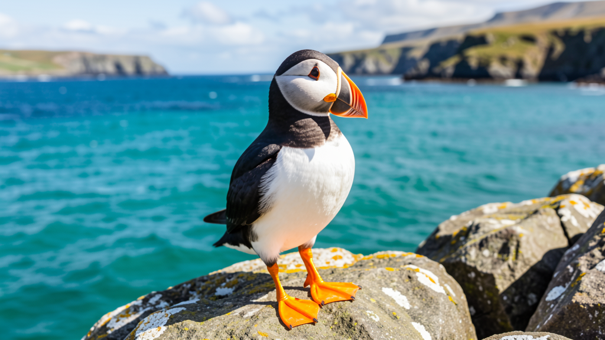

Scientific name: Fratercula arctica · Habitat: North Atlantic coasts — Iceland, Norway, UK, Canada · Diet: Small fish, crustaceans, zooplankton · Fun fact: Puffins are crepuscular in their fishing habits — most active at dawn and dusk. They can carry dozens of small fish in their bills at once, held in place by a unique rasping mechanism on the tongue. Nicknamed "sea parrots" for their bright beaks.
Quick recall — do you remember these from Lesson 1?
sagacious · suh-GAY-shəs · — "The owl surveyed the snow-covered forest with sagacious amber eyes."
crepuscular · krih-PUS-kyuh-ler · — "Owls are crepuscular by nature, hunting at dawn and dusk."
raptor · RAP-ter · — "The owl is a silent raptor, descending without sound."
nocturnal prowler · — "By midnight the owl had become a nocturnal prowler."
hoot at the moon · — "Critics who merely hoot at the moon rarely produce anything."
| 🔬 Science: | The geologist described the sound of the glacier as a low, rasping groan — like the earth itself was in pain. |
| 💼 Work: | His voice had a rasping quality after four hours of presenting without a microphone. |
| 🔍 Investigation: | Officers noted a rasping sound coming from under the floorboards — not footsteps, but something mechanical. |
| 🏛️ History: | The colonial architecture of Georgetown保留了大量 18 世紀的建築風格. |
| 🌊 Nature: | Albatrosses are highly colonial breeders — thousands of pairs nesting within arm's reach of each other. |
| 📰 News: | The report documented how the colonial settlement displaced indigenous populations along the river delta. |
| 🌊 Nature: | Pebble Beach is famous for its tidal pools — miniature ecosystems left behind when the tide retreats. |
| 💼 Work: | The project manager spoke of "tidal forces" in the market — recurring pressures that push and pull the strategy every quarter. |
| 🏔️ Travel: | The kayaker timed the expedition to coincide with low tidal conditions, revealing sea caves normally hidden beneath the waves. |
| 🏔️ Travel: | Cork's harbour is best viewed from the pier at dawn, when fishing boats are bobbing on the waves in the golden light. |
| ❤️ Personal: | She texted him a photo of her father, alone and happy, bobbing on the waves on his old sailboat. |
| 🌊 Nature: | Guillemots and puffins share the cliffs, but only the puffin has earned the nickname "clown of the sea." |
| 📰 News: | Wildlife photographers voted the puffin the "clown of the sea" for its perpetually surprised expression and clumsy waddle. |
Q1–Q3 are from Lesson 2. Q4–Q5 review Lesson 1. Click any answer — green = correct, red = wrong.
Q1 (Lesson 2). The dentist described the texture of the tooth surface as _____ — rough and uneven to the probe.
Q2 (Lesson 2). The _____ nesting sites of the gannets stretched for kilometres along the cliff — thousands of white bodies packed shoulder to shoulder.
Q3 (Lesson 2). The guide warned us to check the schedule carefully — the _____ caves only open when the water recedes enough to walk inside.
Q4 (Review — Lesson 1). The deer emerged at the _____ hour — not quite dawn, not quite day — and disappeared back into the treeline before the sun cleared the ridge.
Q5 (Review — Lesson 1). It was _____ of the lawyer to demand the contract be read aloud before signing — a precaution that uncovered a hidden clause.